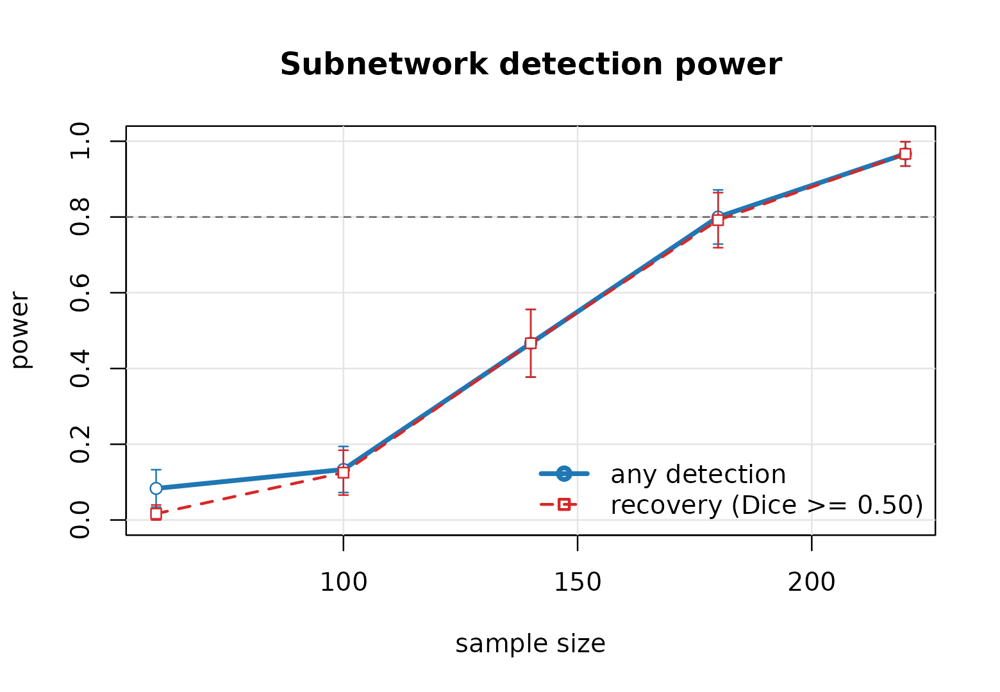

Why simulate
There is no closed-form power calculation for this design. The test statistic is the binomial tail probability of a block that a greedy search picked out by maximizing density, compared against a permutation distribution of the same quantity. Nothing about that is analytically tractable.
So we simulate the entire pipeline — generate a study, screen it, extract subnetworks, run the permutation test — and count how often it works. That is only practical because a full pipeline fit takes milliseconds; a curve over five sample sizes with 120 replicates each is over 100,000 extractions and runs in seconds.
What you need to specify
A power analysis here is a statement about a scenario, and the scenario has more moving parts than a two-sample t-test.
| argument | meaning | how to pick it |
|---|---|---|
n_nodes |
regions in the parcellation | you know this |
cluster_size |
nodes in the subnetwork you hope to find | the smallest scientifically interesting one |
f2 |
Cohen’s at an affected edge | from pilot data, or 0.02 / 0.15 / 0.35 for small / medium / large |
rho_in |
fraction of within-subnetwork edges actually affected | rarely 1; 0.8–0.9 is realistic |
rho_out |
fraction of outside edges affected | scattered associations; 0.01–0.05 |
n_cov |
nuisance covariates | age, sex, motion, site |
f2 is the one people get wrong. At a single edge it is
the effect size of the predictor on that edge’s connectivity, related to
the partial correlation
by
.
A partial correlation of 0.14 — which is a perfectly ordinary
connectivity effect — is
.
rho <- c(0.10, 0.14, 0.20, 0.30, 0.40)
data.frame(partial_r = rho, f2 = round(rho^2 / (1 - rho^2), 3))
#> partial_r f2
#> 1 0.10 0.010
#> 2 0.14 0.020
#> 3 0.20 0.042
#> 4 0.30 0.099
#> 5 0.40 0.190A first curve
pw <- power_curve(n = c(60, 100, 140, 180, 220),
n_nodes = 100, cluster_size = 15, f2 = 0.02,
rho_in = 0.9, rho_out = 0.02,
n_sim = 120, n_perm = 199, seed = 7, progress = FALSE)
pw
#> Power analysis for subnetwork detection
#>
#> nodes : 100
#> planted subnets : 15 (sizes)
#> effect size f2 : 0.02
#> rho_in / rho_out: 0.90 / 0.020
#> replicates : 120 permutations: 199 alpha: 0.05
#> Dice cutoff : 0.50
#>
#> n power recovery dice n_sig
#> 60 0.083 (0.025) 0.017 (0.012) 0.032 0.08
#> 100 0.133 (0.031) 0.125 (0.030) 0.089 0.13
#> 140 0.467 (0.046) 0.467 (0.046) 0.383 0.47
#> 180 0.800 (0.037) 0.792 (0.037) 0.681 0.80
#> 220 0.967 (0.016) 0.967 (0.016) 0.843 0.98
#>
#> Power and recovery show the estimate with its Monte Carlo standard
#> error in parentheses.
plot(pw, target = 0.8)
required_n(pw, target = 0.8)
#> [1] 181.9048Two kinds of power
The two curves answer different questions and the gap between them is the interesting part.
- Any detection — some subnetwork was declared significant. This is conventional power, and on its own it is a weak claim: it can be satisfied by a significant block that has nothing to do with the one you planted.
-
Recovery — every planted subnetwork is matched by a
significant one with Sørensen–Dice overlap of at least
dice_cut(0.5 by default). This is the claim you actually want to make, because papers report which regions are involved.
A study in the gap between the two curves is large enough to detect that something is there but too small to say where. If your conclusion names regions, size the study on the recovery curve.
with(pw$power, data.frame(n, any = power, recovery = power_recovery,
gap = round(power - power_recovery, 3)))
#> n any recovery gap
#> 1 60 0.08333333 0.01666667 0.067
#> 2 100 0.13333333 0.12500000 0.008
#> 3 140 0.46666667 0.46666667 0.000
#> 4 180 0.80000000 0.79166667 0.008
#> 5 220 0.96666667 0.96666667 0.000The threshold dominates everything
Before trusting any number above, understand the setting that produces it.
Screening keeps the top few percent of edges. A subnetwork of
c nodes spans c(c-1)/2 edges. If screening
retains fewer edges in the whole graph than the subnetwork
contains, the subnetwork cannot survive as a block — no sample size
rescues it.
sweep <- lapply(c(0.99, 0.975, 0.95, 0.90), function(tp) {
p <- power_curve(n = 120, n_nodes = 80, cluster_size = 20, f2 = 0.06,
n_sim = 60, n_perm = 199, seed = 7, progress = FALSE,
threshold_prob = tp)
data.frame(threshold_prob = tp,
edges_kept = round((1 - tp) * 80 * 79 / 2),
recovery = p$power$power_recovery)
})
do.call(rbind, sweep)
#> threshold_prob edges_kept recovery
#> 1 0.990 32 0.5833333
#> 2 0.975 79 1.0000000
#> 3 0.950 158 1.0000000
#> 4 0.900 316 1.0000000The planted subnetwork here contains 20 * 19 / 2 = 190
edges. At the 99th percentile only 32 edges survive screening in the
entire graph, and recovery collapses. Everything else about the study is
unchanged.
power_curve() defaults
threshold_prob = NULL, which scales the threshold with the
design so it retains roughly twice as many edges as the planted
subnetworks contain. That keeps the setting from silently dominating the
answer, but it does not make the dependence go away: a power
figure is a statement about a particular screening choice and should be
reported with it.
Being honest about tuning
The default fixes the threshold across replicates. If your real
analysis will instead tune it on the data — which is what
subnet() does by default — the simulation should pay the
same selection cost, otherwise it reports power for a procedure you are
not going to run.
honest <- power_curve(n = c(100, 180), n_nodes = 100, cluster_size = 15,
f2 = 0.02, n_sim = 40, n_perm = 199, seed = 7,
progress = FALSE, tune_each = TRUE,
tune = list(n_perm = 10,
lambda_grid = c(0.5, 0.7, 0.9),
probs = c(0.95, 0.975, 0.99)))
honest$power[, c("n", "power", "power_recovery")]
#> n power power_recovery
#> 1 100 0.2 0.150
#> 2 180 0.9 0.875Shrinking the tuning grid via tune is the main lever for
making this affordable.
Note that tuning does not automatically come out worse. Two
effects pull in opposite directions: every permutation now has to search
the same grid, which costs power, but the threshold also adapts to each
data set instead of being fixed in advance, which gains power. In this
scenario the second effect wins and tune_each = TRUE
reports slightly higher recovery than the fixed default. Which way it
goes depends on how well the fixed threshold happened to suit the
design.
The point of tune_each is not that it is conservative —
it is that it measures the procedure you will actually run. Quoting
power from a fixed threshold and then tuning at analysis time measures
neither.
Comparing designs
Because everything is fast, sweeping a design parameter is cheap. Does it pay to increase the parcellation resolution?
grid <- expand.grid(n_nodes = c(60, 100, 200), n = c(100, 200))
res <- Map(function(nn, n) {
p <- power_curve(n = n, n_nodes = nn, cluster_size = 15, f2 = 0.02,
n_sim = 60, n_perm = 199, seed = 11, progress = FALSE)
data.frame(n_nodes = nn, n = n, recovery = p$power$power_recovery)
}, grid$n_nodes, grid$n)
do.call(rbind, res)
#> n_nodes n recovery
#> 1 60 100 0.7000000
#> 2 100 100 0.1500000
#> 3 200 100 0.0000000
#> 4 60 200 1.0000000
#> 5 100 200 0.9166667
#> 6 200 200 0.3500000More nodes means more edges to search and a harsher effective multiplicity for a subnetwork of fixed size, so at a fixed sample size a finer parcellation costs power for a given absolute subnetwork size. Whether that is the right trade depends on whether the subnetwork you care about is a fixed number of regions or a fixed fraction of the brain.
Cost and precision
Every reported proportion carries a Monte Carlo standard error,
printed in parentheses and available as se_power /
se_recovery. It shrinks as
,
so halving it costs four times the compute.
data.frame(n_sim = c(50, 100, 200, 500, 1000),
se_at_50pct = round(sqrt(0.25 / c(50, 100, 200, 500, 1000)), 4))
#> n_sim se_at_50pct
#> 1 50 0.0707
#> 2 100 0.0500
#> 3 200 0.0354
#> 4 500 0.0224
#> 5 1000 0.0158Two hundred replicates give about ±0.035 at 50% power, which is enough to choose between candidate sample sizes. Push to 1,000 only for a number going into a grant.
Replicates are independent, so n_cores scales close to
linearly, and results do not depend on it:
power_curve(n = c(60, 100, 140), n_nodes = 100, cluster_size = 15,
f2 = 0.02, n_sim = 500, n_cores = 8, seed = 7)Reporting
A defensible power statement for this design names the scenario, not just the number. For example:
Assuming a 15-node subnetwork within a 100-region parcellation, an edge-level effect of (partial r ≈ 0.14) present in 90% of within-subnetwork edges, 2% of edges associated outside it, and screening at the 95th percentile of edge evidence, 200 subjects give 85% probability of recovering the subnetwork with Dice overlap ≥ 0.5 at a family-wise error rate of 0.05 (200 simulation replicates, 199 permutations each; Monte Carlo SE 0.025).
See also
vignette("subnetr", package = "subnetr") for the
analysis pipeline itself.